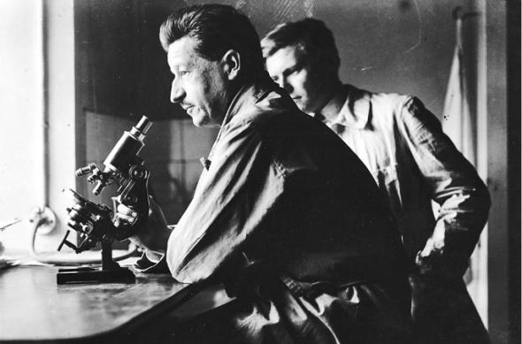
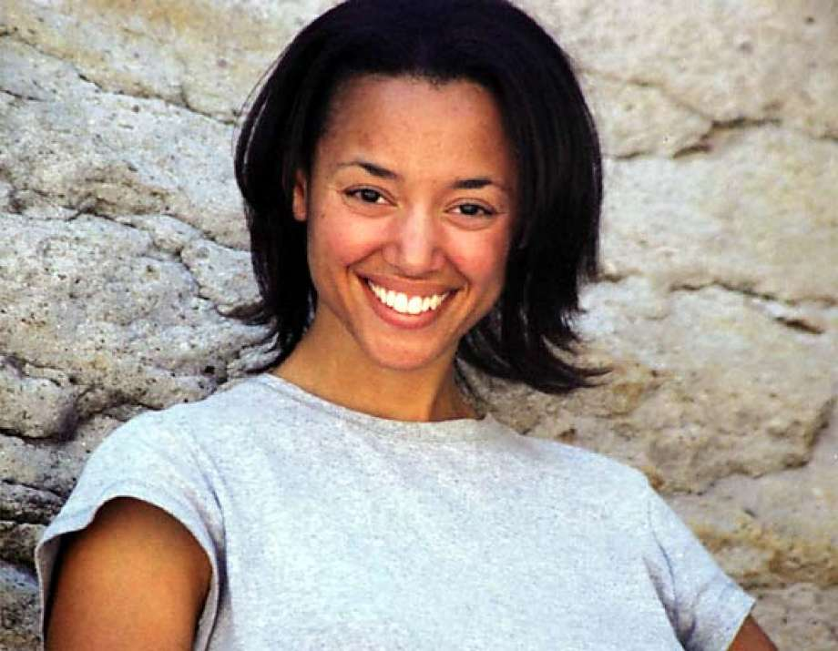
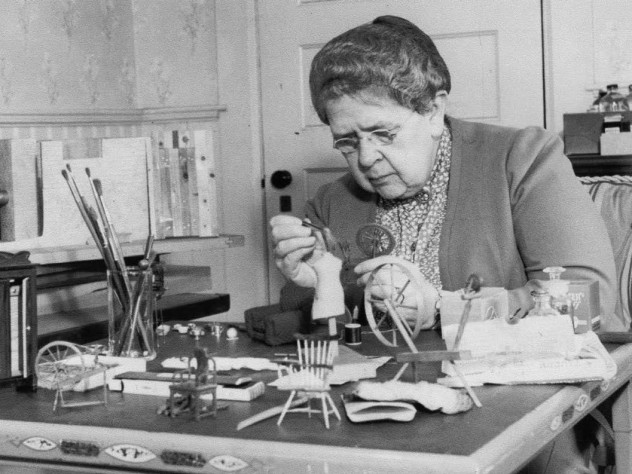

One of the most important and famous people of forensic is Dr. Edmond Locard. His motto: “everything leaves a trace.” He theorized that a person who enters a crime scene leave something or take something.
A more modern figure is Clea Koff, who study bones. She made a lot of contributions on many cases to the United Nation International Criminal Tribunal for Rwanda. Her discoveries helped some mysteries to the Rwandan Geneciode. She brought many guilty parties to justice.
Frances Glesser Lee made one of the most impactful methods - building mini crime scenes. His ability to constructed very explicit crime scene with small details which gave clues to detectives and help many cases.
